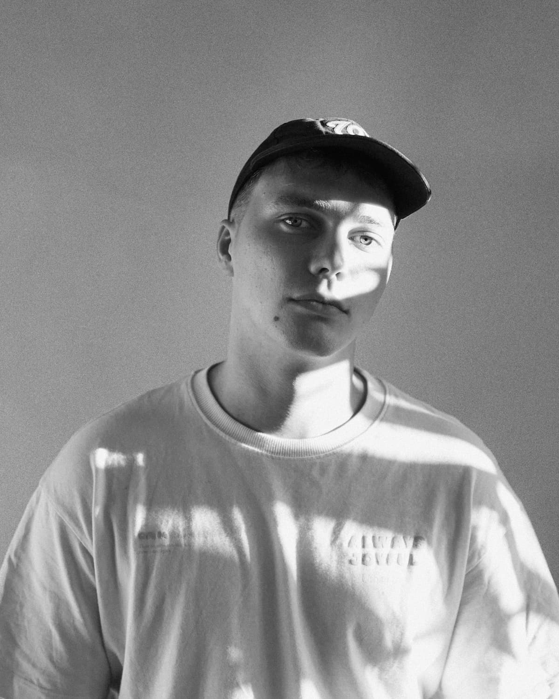
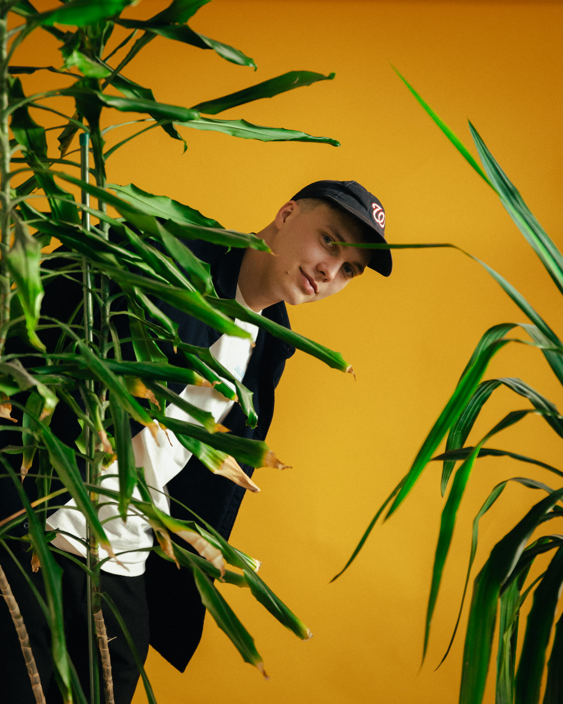
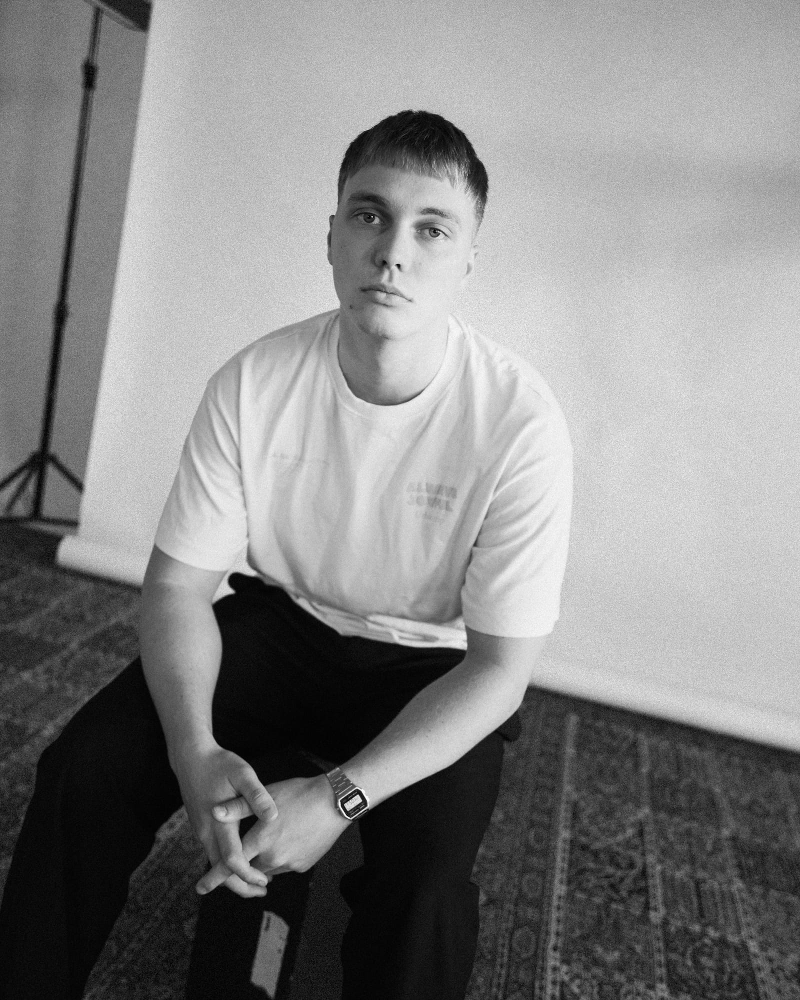

i'm heinrich, a visual storyteller with a knack for cinematography and editing.
i first got into video stuff by filming myself kicking a football in my backyard with a mate when i was around 10 years old. since then, i've been intrigued by the world of cool visuals. during my childhood i got familiar with different editing programs and always had an interest into visuals, so much so, that i decided to go to a film school.
after graduating, i got to work for one of the top agencies in estonia called vaas. i got to meet extraordinary people and do extraordinary stuff on a daily basis. i got adjusted to the fast-pace of agency work and did all types of visual projects.
nowadays i mainly enjoy cinematography, directing, editing and color grading. i've worked with brands like tele2, rimi, smartposti, united motors, merko, occo, converse, nike, goldtime, stokker, veriff.
2020-2023– baltic film and media school, audiovisual media
2022-2026– vaas agency, editor/cinematographer
tallinn-based. i'm open for work, feel free to reach out.


